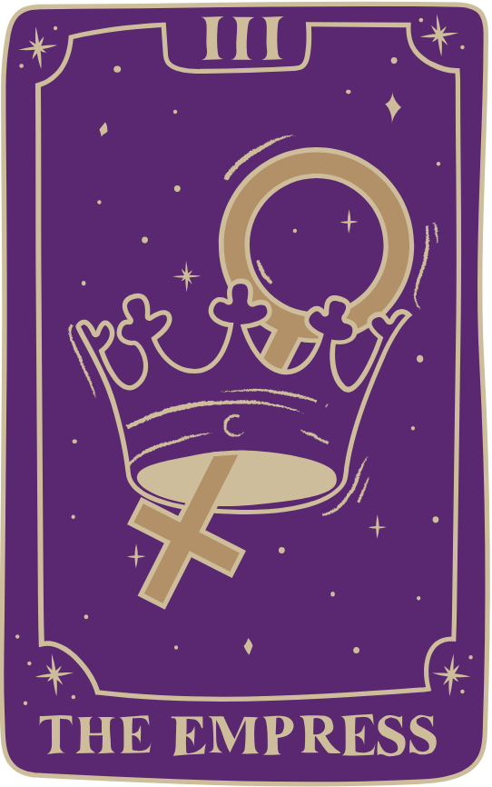

Взаємодія з картами Таро
для початківців
Tapo — це інструмент, який використовується для отримання відповідей на запитання.
Людину, яка користується цим інструментом, можна назвати той, хто читає карти.
Того, хто читає карти професійно, часто називають тарологом, ворожбитом. Того, хто
ставить тарологові запитання (для кого читаються карти), називають кверентом (від
лат. quaerentus той, хто шукає, питає) або запитувачем. Утім ми можемо читати карти й
для себе, виконуючи в цьому разі дві ролі одночасно. Людину, яка звернулася до таролога по
консультацію, називають також просто клієнтом

Проради користування картами Таро
У процесі роботи таролог витрачає великий обсяг емоційних сил та енергії, яку вкладає
у розклад. Враховуйте це і не гадайте, якщо хворі, втомилися чи чимось серйозно
засмучені.Ворожити собі не прийнято, тому що неможливо при цьому залишатися незалежним
спостерігачем і об’єктивно тлумачити розклад. З особистими питаннями звертайтесь
до інших тарологів або використовуйте простий тренувальний розклад «Карта дня».Не можна спотворювати інформацію, отриману під час розкладу, підігруючи кверенту.
Не можна гадати на людей проти їхньої волі.
Питання смерті, її причин та наслідків — завдання для досвідчених майстрів, яке
новачкам не під силу.Безкоштовні розклади – табу для таролога. Витрата енергії без подяки у відповідь
призводить до вигоряння.

Коротке пояснення старших арканів
Імператриця
Символізує плідність,
родючість та природну красу. Імператриця означає обійми материнства та турботу про
інших.
Імператор
Відображає авторитет,
структуру та стабільність.
Імператор підкреслює
важливість порядку та
дисципліни у житті.
Імператор
Означає духовність, традиції
та освіту. Ієрофант
символізує пошук мудрості
через навчання та поділення
знань.
Базові розклади
Розклад «Три карти»
Один з найпростіших і найбільш універсальних розкладів. Три карти
можуть символізувати минуле, теперішнє і майбутнє, або ж представляти
різні аспекти ситуації (наприклад, що допомагає, що перешкоджає і як
вирішити проблему).
Як розкласти:
Витягніть три карти.
Перша карта представляє минуле або ситуацію, яка вплинула на поточну
ситуацію.
Друга карта — це поточний стан справ або те, що зараз відбувається.
Третя карта показує майбутнє або можливий результат.
Кельтський хрест»
Один з найбільш популярних і глибоких розкладів, який дає більш детальне
уявлення про ситуацію. Він складається з десяти карт і показує минуле,
теперішнє, майбутнє, а також різні зовнішні і внутрішні фактори, що
впливають на ситуацію.
Витягніть 10 карт
Перша карта — це поточна ситуація.
Друга карта — це проблема чи виклик.
Третя карта — це корінь проблеми.
Четверта карта - минуле, що впливає на ситуацію.
Пʼята карта — це зовнішні впливи.
Шоста карта — це надії і побоювання.
Сьома карта — це майбутнє.
Восьма карта — це загальний результат або підсумок.
Девʼята і десята карти дають додаткові поради чи можливі варіанти
розвитку ситуації.
Розклад «Чотири карти» (для любовних питань)
Це популярний розклад, який використовується для розуміння відносин між
двома людьми. Він дозволяє зрозуміти, як взаємодіють дві сторони і що
можна зробити для покращення ситуації.
Як розкласти:
Перша карта — як виглядає стосунок між вами.
Друга карта — що ви відчуваєте один до одного.
Третя карта - що заважає або впливає на стосунки.
Четверта карта - результат або розвиток ситуації.
Наш курс
Курс “Гра Арканів”
Початок 01.04.2025
Вартість 2500 грн

Формат:
Онлайн
Тривалість:
2 місяці (8 місяців)
Переваги курсу:
Ви отримуєте практичні навички
використання Таро.
Після закінчення навчання зрозумієте
значення кожної окремої карти та їхніх
комбінацій, розберетесь, чим старші
Аркани відрізняються від молодших, що
вони означають, яку світоглядну будову
має ця система.
Основи Таро
₴999
- 10 відеоуроків
- Доступ на 1 місяць
- Підтримка в чаті
- Практичні вправи
Таро для практиків
₴2499
- 25 відеоуроків
- Доступ на 3 місяці
- Щотижневі вебінари
- Зворотній зв'язок від ментора
Професійне Таро
₴4999
- 50+ уроків
- Індивідуальна практика
- Сертифікат
- Безстроковий доступ